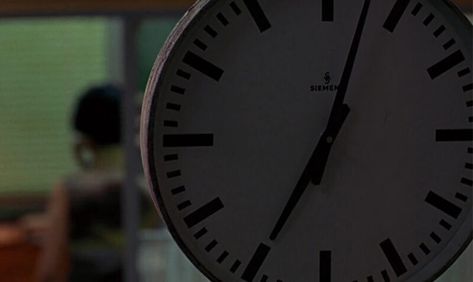
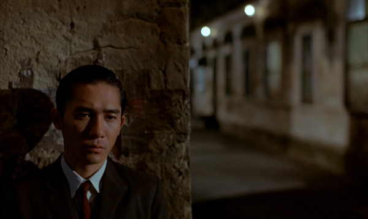

Ik maak aftermovies, trouwfilms en promo's, en studeer montage aan het RITCS in Brussel.
Videografie
Als videograaf werk ik vooral aan aftermovies van evenementen, trouwfilms en creatief promotioneel werk.
RITCS
Ik zit in het derde jaar van de opleiding Audiovisuele Kunsten: Editing aan het RITCS. Hier vind je projecten uit mijn opleiding.
Ten Anker
Individueel Artistiek Onderzoek 1 · 2024 – 2025. Script, regie, camera, montage en soundtrack op viool.
Theo (16), een onzekere laatbloeier, wordt op een avond uitgesloten door zijn vrienden. Op zoek naar een verklaring belt hij met "een vriend" en wordt hij gedwongen om de verklaring in zijn eigen gedrag te zoeken.
Opdracht
Voor het vak IAO Montage moest ik een audiovisueel werk van drie minuten maken waarin ik mijn eigen stem als maker verken. Het begon met een thema dat me raakte tijdens een film die we samen bekeken, en van daaruit werkte ik een persoonlijk idee uit. Dat kon een documentaire, portret, fictiescène of experimentele film worden.
De opdracht draaide rond zelfonderzoek en creatieve vrijheid: durven experimenteren, fouten maken, en iets creëren dat echt bij mij hoort. Tijdens het proces gaf ik mijn idee vorm, stelde het voor aan de groep, en verfijnde het verder op basis van feedback.
Ons startpunt was de film: In the Mood for Love van Wong Kar-Wai. We werden gevraagd om onze film te linken aan een onderwerp, emotie en herhaling die we kunnen representeren met een frame uit de film. We hingen niet echt vast aan deze link, maar ik heb toch vastgehouden aan volgende frames.


Proces
Ik koos ervoor om een kortfilm te maken waarin ik dieper ging op een struggle die ik een aantal jaren onderging: laatbloeier zijn. Ik schreef het script, regisseerde, hanteerde de camera en monteerde vervolgens alles. Als kers op de taart maakte ik met mijn viool de soundtrack geïnspireerd op Yumeji's Theme van Shigeru Umebayashi.
Fysiek groeide ik trager dan de mensen rond mij; ik bleef klein, had een hoge stem, etc. Dit alles terwijl ik mijn kring wel zag opgroeien. Dit maakte plaats voor onzekerheid om te groeien. Ik voelde me achter in de tijd. Die onzekerheid zorgde ervoor dat ik op sociaal vlak passief werd en mezelf steeds naar de achtergrond bracht. Hoe onzichtbaarder ik werd, hoe onzekerder ik werd; ik kwam terecht in een neerwaartse spiraal. Ik besefte uiteindelijk dat ik zelf een obstakel was voor het sociaal opgroeien; niet het feit dat ik "niet" fysiek opgroeide.
Voor het verhaal ging ik mezelf bestuderen als personage en onderzocht onder andere het complex innerlijk conflict tussen fysiek en sociaal opgroeien en hoe ze een obstakel vormen voor elkaar. Een complexe situatie zoals deze wou ik ook nuanceren en wou ik begrip tonen voor zowel mezelf als mijn vrienden.
Uiteindelijk kwam ik op het idee om Theo te laten bellen met de oudere versie van zichzelf. Dit wordt subtiel duidelijk gemaakt aan de hand van kledij, positie in het frame, etc. maar meer expliciet in de reflectie van Theo op het einde. Sommigen snapten deze insteek volledig, andere hadden verschillende interessante interpretaties, en nog anderen snapten het niet of pas na enkele keren kijken.
Oorspronkelijk was ik een beetje teleurgesteld door deze verscheidenheid aan reacties en interpretaties, maar het toont juist dat het een werk is dat stemt tot nadenken. Ik ben er het mooie van beginnen inzien.
Ik heb mij volledig gesmeten om deze film te maken en ben enorm dankbaar voor mijn acteurs die het mogelijk hebben gemaakt. Het resultaat is een kortfilm met lovende feedback van de docenten met een 16/20.
Tot slot is het een universele situatie; het kan iedereen overkomen; maar wel een situatie die slechts de minderheid meemaakt. De weinige representatie in film motiveerde me ook om dit te maken. De taboe over dit soort gevoelens, zeker bij jongens, wou ik ook graag doorbreken.
Feedback
De film is van een hoog niveau. Het is een zeer verzorgde film waar er aandacht is voor elke parameter. De acteurs zijn goed gecast. Het open einde is verrassend. De zelfgespeelde klankband geïnspireerd op Shigeru Umebayashi: Yumeji's theme (In the Mood for Love) wordt geapprecieerd. De presentatie was helder, interessant en volledig.
Tristan, je hebt een passie voor het filmmedium en dat is voelbaar in je onderzoek. Je stelt je kwetsbaar op wat je onderzoeksproces ten goede komt. Je hebt getoond dat je kritisch bent voor jezelf en openstaat voor feedback.
Bloopers
Over
Monteur, videograaf en filmstudent uit Gent.
Ik ben Tristan Nijs, born and raised in Gent. Ik studeer montage aan het RITCS en werk daarnaast als freelance videograaf. Ik hou me daarin bezig met aftermovies van evenementen, trouwfilms of creatief promotiewerk.
Op het RITCS koos ik voor montage omdat ik merk dat ik daar het meest openbloei en het meeste voldoening uit haal. De keuze voor het RITCS heeft een enorme impact op mij als persoon gelaten; ik ben film niet alleen meer als entertainment gaan zien, maar als kunst, als een manier om iets wezenlijks te zeggen. Ook mijn appreciatie voor montage als een kunst is enorm gegroeid. Dankzij het RITCS denk ik in al mijn projecten na over intentie, ethiek en mijn positie als filmmaker en kunstenaar.
Muziek zit daarnaast aan de basis van hoe ik monteer. Ik kom uit een muzikale familie en speelde jarenlang viool; later ontdekte ik muziekproductie via FL Studio. Die achtergrond hoor je terug in mijn werk: muziek bepaalt het ritme en de ademhaling van een edit, niet achteraf toegevoegd maar vanaf het begin het uitgangspunt.
Sindsdien combineer ik de filmopleiding, mijn muzikale achtergrond met videografie: in film verdiep ik me in de taal, kunst en intentie van het beeld, in videografie leer ik de praktijk: klanten, deadlines, snel schakelen. Die combinatie houdt me scherp.
Contact
Voor aftermovies, trouwfilms of promowerk: laat hier een bericht achter.